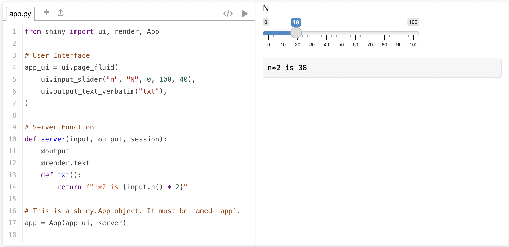
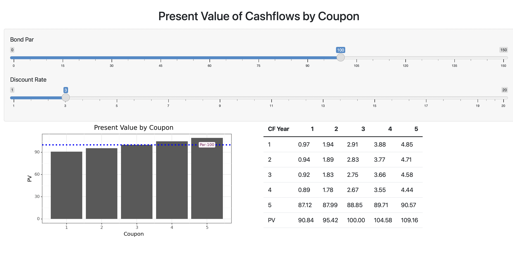
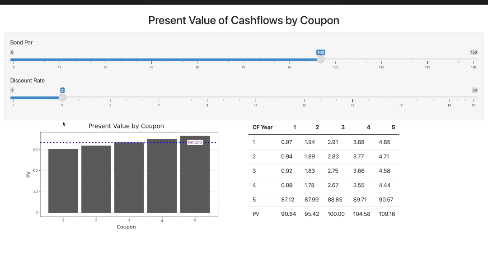

2023-06-13
Interactive web applications are a powerful and versatile tool in a data scientist’s tool belt. Through web apps, stakeholders can self-serve and interact with analysis freeing data science professionals up to garner additional insights. Python has several fantastic frameworks that create web apps, most of which have room for improvement regarding reactivity. Fortunately, this is another area where Posit makes Python easy with Shiny for Python.
Before discussing Shiny for Python, let’s cover what reactivity is and why it is essential. Reactivity is altering an input on the dashboard and getting a corresponding output without having to refresh the entire application. Reactivity is what gives stakeholders and data scientists the ability to explore data in real time and enables interaction with the data rather than just viewing it. Reactivity also ensures web apps scale and remain performant, which is critical in driving stakeholder adoption (no point in building something great if it’s slow and nobody wants to use it!).
Now that we’ve covered why reactivity is meaningful, let’s talk about Shiny for Python and where it fits in with the sizable Python web framework space. We’ve written about how Shiny for Python’s design philosophy sets it apart from there other options.
In summary, most Python web frameworks need to handle reactivity better. Shiny for Python exists to make building reactive web apps reasonably easy, striking an ideal balance between simplicity and customizability. Reactivity is baked into Shiny and easily integrated into any web app.
Shiny is built for data scientists and not developers. HTML, CSS, and JavaScript are not required but can be used to create web apps in Shiny for Python. Ultimately Shiny is one of, if not the best option, for reactive web applications in Python due to its extensive but straightforward API compatible with web languages.
Every Shiny app comprises two parts, the UI, which generates the HTML to send to the browser, and the Server logic, which provides the interactivity.
from shiny import ui, render, App
# User Interface
app_ui = ui.page_fluid(
ui.input_slider(id = "n", label = "N", min = 0, max = 100, value = 40),
ui.output_text_verbatim(id = "txt"),
)
# Server function
def server(input, output, session):
@output
@render.text
def txt():
return f"n*2 is {input.n() * 2}"
# This is a shiny.App object. It must be named `app`.
app = App(app_ui, server)The code snippet above creates a Shiny app containing an adjustable slider and text display box with a statement containing the output of a calculation based on the slider’s active value.
Each UI element is defined using a method of the UI object. In this example, the slider is created with ui.input_slider() and the text display box with ui.output_text_verbatim(). Each UI method is given an id, which is used to reference it in the server function allowing us to use the slider’s value and to populate the text display box.
The server function is created with two decorators and a function. The @output decorator enables the output of the function to be displayed on the web page, and the @render.text decorator tells Shiny to display the output as text. The txt() function, named after the text display box id, is created to populate said text box. The function references and uses the input slider’s value using input.n(), with n being the slider’s id.
Finally, the ui and server are combined using the App() function. The Shiny app can be generated, giving us the following:

We will now use Shiny for Python to build a simple reactive app that displays the present value of a bond for different coupons based on a user-adjusted price and discount rate. The starting point of every Shiny dashboard is the user interface (UI). After defining the variable containing our UI, we add a page with the ui.page_fluid() function. Within the page, we can determine the layout of our application, adding things like rows, columns, panels, sidebars, navigation bars, and more.
In this code snippet, we create a page and add a single panel containing a header and two sliders that will adjust values. Following the panel is a row with two columns that will hold our reactive plot and table.
Shiny has methods to create headers like ui.h2(). In the code snippet below, the header is generated by writing HTML and using ui.HTML() to demonstrate that Shiny can seamlessly work with HTML code.
from shiny import App, render, ui, reactive
import pandas as pd
import numpy as np
import matplotlib.pyplot as plt
from plotnine import *
app_ui = ui.page_fluid(
ui.HTML(
'''</head>
<body>
<center>
<h2>Present Value of Cashflows by Coupon</h2>
</center>
<p></p>'''
),
ui.panel_well(
ui.input_slider("par", label="Bond Par", value=100, min=0, max = 150),
ui.input_slider("discount", label="Discount Rate", min=1, max = 20, value = 3)
),
ui.row(
ui.column(6,ui.output_plot("grph", height='320px')),
ui.column(6, ui.output_table("tbl"))
)
)With the interface done, it is time to build the server function. As mentioned earlier, the server function will populate the interface and enable reactivity. For this blog post, the server function will be broken into pieces. We will put it all together and render our application by the end.
The server function takes three standard arguments: input, output, and session. Next, we use a function to add the data that will link to the sliders defined in our interface. A context-dependent decorator precedes all functions. In this example, we use @reactive.Calc to denote a function where the return value will be used.
The calc() function will take the inputted values from the interface sliders and generate a data frame of values.
def server(input, output, session):
@reactive.Calc
def calc():
r = input.discount() / 100
par = input.par()
v = [1,2,3,4,5]
df = pd.DataFrame(data = dict.fromkeys(v, v), index=v)
df = df.apply(lambda x: (par * (x.name/100)) / (1 + r) ** x.index)
df.loc[5] = ((df.columns/100) * par + par) / (1 + r) ** 5
df.loc[6] = df.sum(axis = 0)
df = df.round(2)
df['CF Year'] = [1,2,3,4,5,'PV']
df = df[['CF Year', 1,2,3,4,5]]
return dfThe next part of our server function creates the plot and table. Again, notice the context-dependent decorators being used. @output tells Shiny to display the function’s output on the web app, and the render decorator tells Shiny how to display the output.
We create the function that will generate our graph and link it to the plot container; it will populate by setting the function name equal to the container’s id, grph. The previously defined calc() function is called to pass the data frame it created to our grph() function. Plotnine is then used to create an annotated plot. The @output and @render.plot decorators that precede the function tell Shiny to make the function available for display and that it is a plot.
We then create the tbl() function, which passes the data frame generated by the calc() function to the user interface. Again, this occurs because the table UI element ID defined in the interface and the server function name are consistent. Like before, decorators that tell Shiny to display the output and how to display it are present.
Because our plot and table are linked to the reactive calc() function, they will change in response to the slider inputs on the UI changes.
Lastly, we call the App() function to package the ui and server functions together, which produces our app.
@output
@render.plot
def grph():
df2 = calc().tail(1)
df2 = df2[[1,2,3,4,5]].T
df2.columns = ['PV']
p = (ggplot(df2, aes(x=[1,2,3,4,5], y='PV'))
+ geom_col()
+ geom_hline(yintercept=100, linetype='dotted', color='blue', size=1.5)
+ annotate('label', x=5, y=input.par(), label=f'Par:{input.par()}', color='#770d50', size=8, label_size=0.2)
+ theme_bw()
+ labs(
x = 'Coupon',
y = 'PV',
title = 'Present Value by Coupon')
)
return p
@output
@render.table
def tbl():
return calc()
app = App(app_ui, server) We get a dashboard that looks like this:

and works like this:

The full script can be found on GitHub.
Shiny web apps can be deployed in several ways. The best way is to use Posit Connect, which allows you to publish data products created in R and Python for stakeholder consumption. Check out the deployed app on our demo server.
With Posit Connect, stakeholder self-service becomes a reality. There are many great use cases that can be found on the Posit website, but one I can speak to personally is:
Using a Shiny app as an interface where stakeholders could upload an Excel template with ids, select what data they wanted, and get the selected data returned based on the uploaded ids. This prevented several stakeholders from regularly contacting me with data requests for assistance. It saved both myself and the stakeholders time while empowering them to interact with their data.
Posit Connect is capable of so much more and powers the data science infrastructure of many of the world’s largest organizations. Contact us and learn what Posit Connect can do for your organization.
We have several resources for those interested in taking advantage of Shiny’s robust capabilities:
Join us at posit::conf(2023) and learn to build Shiny apps in Python in our hands-on workshop led by Joe Cheng, CTO of Posit. Limited spots are available so register now!